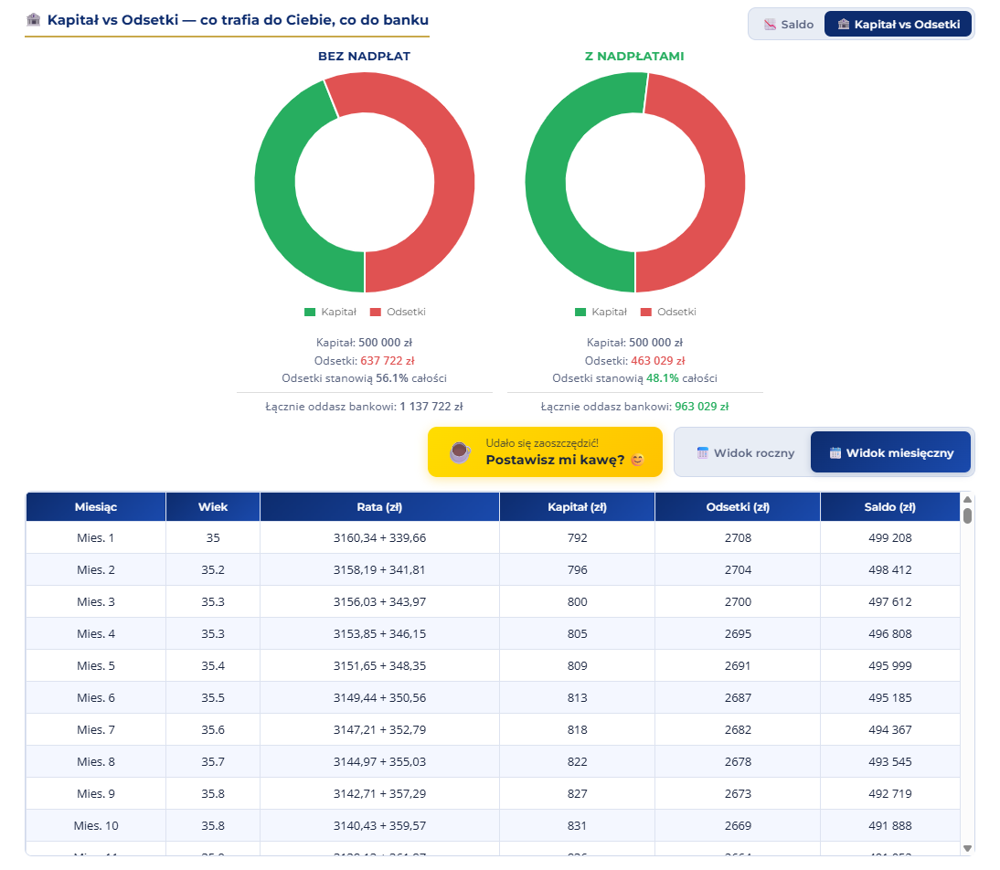

Jaka jest najlepsza strategia nadpłat kredytu hipotecznego?
Strategia progresywna to metoda, która łączy oszczędności identyczne jak przy skróceniu okresu kredytowania z elastycznością zmniejszonej raty. To jeden z najbardziej niedocenianych sposobów na nadpłacanie kredytu hipotecznego.
Czym jest strategia progresywna?
Większość kredytobiorców staje przed wyborem: skrócić okres kredytowania czy zmniejszyć ratę? Matematycznie skrócenie okresu daje większe oszczędności — ale wiąże Cię ze stałą, wyższą ratą przez cały czas trwania kredytu.
Strategia progresywna to trzecia droga. Polega na tym, że:
- Wybierasz zmniejszenie raty jako strategię nadpłat w banku.
- Ustalasz stałą kwotę, którą co miesiąc wpłacasz do banku (np. 3 500 zł).
- Rata bankowa maleje co miesiąc — bo saldo kredytu spada szybciej.
- Twoja nadpłata automatycznie rośnie — bo różnica między Twoją stałą kwotą a malejącą ratą bankową jest coraz większa.
Efekt końcowy: oszczędności identyczne jak przy skróceniu okresu — ale z jedną kluczową przewagą.
Kluczowa przewaga: elastyczność w trudnym miesiącu
💡 Jeśli nadejdzie trudniejszy finansowo miesiąc — możesz w tym miesiącu ominąć nadpłatę i zapłacić tylko aktualną (już niższą) ratę bankową. Nie tracisz nic z dotychczasowych oszczędności. Przy skróceniu okresu nie masz tej opcji — rata jest stała i musisz ją zapłacić w całości.
⏱ Skrócenie okresu
- Rata pozostaje stała (wyższa)
- Kredyt kończy się wcześniej
- Duże oszczędności na odsetkach
- ❌ Brak elastyczności — musisz płacić pełną ratę co miesiąc
- ❌ Trudniejszy miesiąc = problem
📉 Strategia progresywna
- Rata bankowa maleje co miesiąc
- Nadpłata automatycznie rośnie
- Oszczędności identyczne jak przy skróceniu
- ✅ W trudnym miesiącu płacisz tylko niższą ratę bankową
- ✅ Pełna elastyczność budżetu
Przykład: kredyt 500 000 zł, 7%, 30 lat
Przyjmijmy konkretne liczby, żeby zobaczyć jak to działa w praktyce:
| Parametr |
Bez nadpłat |
Strategia progresywna |
| Kwota kredytu |
500 000 zł |
500 000 zł |
| Oprocentowanie |
7% |
7% |
| Okres kredytowania |
30 lat |
30 lat |
| Rata bankowa (start) |
3 160,34 zł |
3 160,34 zł |
| Kwota wpłacana co miesiąc |
3 160,34 zł |
3 500,00 zł |
| 💰 Oszczędność na odsetkach |
— |
174 693,67 zł |
| Rata bankowa po 5 latach |
~3 160 zł |
poniżej 3 000 zł |
Wpłacając zaledwie 339,66 zł więcej miesięcznie (3 500 zł zamiast 3 160,34 zł), oszczędzasz:
174 693,67 zł
na odsetkach przez cały okres kredytowania
A po 5 latach nadpłacania Twoja rata bankowa (bez nadpłaty) spada poniżej 3 000 zł — masz więc coraz większy bufor bezpieczeństwa na trudniejsze miesiące.
Jak wdrożyć strategię progresywną w kalkulatorze?
W kalkulatorze nadpłaty na nadplacam.com.pl wystarczą dwa kroki:
- W sekcji 2. Plan Nadpłat — w polu Nowa rata (zł) wpisz kwotę, którą chcesz co miesiąc wpłacać (np. 3 500).
- W polu Strategia nadpłat wybierz Zmniejszenie wysokości raty.
- Kliknij Przelicz — zobaczysz dokładne oszczędności i harmonogram z malejącą ratą bankową.
Harmonogram pokaże Ci jak rata bankowa maleje z miesiąca na miesiąc — i jak rośnie Twoja nadpłata, przy stałej kwocie wpłacanej do banku.
Harmonogram kredytu — Twój plan nadpłat miesiąc po miesiącu
Po przeliczeniu kalkulator generuje szczegółowy harmonogram w trybie miesięcznym. Widać w nim coś, czego nie pokazuje żaden standardowy harmonogram bankowy:
- Rata bankowa — maleje z każdym miesiącem (bo saldo spada szybciej dzięki nadpłatom).
- Nadpłata — rośnie co miesiąc odrobinę, tak aby suma raty + nadpłaty pozostała stała.
- Kapitał i odsetki — widzisz dokładnie ile z każdej wpłaty trafia do Ciebie (spłata kapitału), a ile do banku (odsetki).
- Saldo — spada szybciej niż w standardowym harmonogramie.

Przykładowy harmonogram miesięczny dla kredytu 500 000 zł, 7%, 30 lat z nową ratą 3 500 zł (strategia zmniejszenia raty). Kolumna „Rata (zł)" pokazuje format rata bankowa + nadpłata — rata maleje, nadpłata rośnie, suma pozostaje stała. Wykresy kołowe porównują łączne odsetki bez nadpłat (637 722 zł) i z nadpłatami (463 029 zł).
📄 Pobierz PDF w trybie miesięcznym — kalkulator umożliwia wygenerowanie harmonogramu jako plik PDF. Dzięki temu będziesz wiedzieć dokładnie jaką kwotę nadpłacasz każdego miesiąca i możesz zaplanować przelewy z wyprzedzeniem. Wystarczy kliknąć przycisk „Pobierz PDF" po przełączeniu na widok miesięczny.
Kiedy strategia progresywna ma największy sens?
Strategia progresywna sprawdza się szczególnie dobrze gdy:
- Chcesz maksymalizować oszczędności, ale obawiasz się sztywnej, wysokiej raty przez lata.
- Twoje dochody są zmienne lub niepewne — np. prowadzisz działalność gospodarczą.
- Chcesz mieć psychologiczny komfort — widzisz jak rata maleje co miesiąc.
- Planujesz zwiększać nadpłaty w miarę wzrostu dochodów — strategia progresywna robi to automatycznie.
Sprawdź strategię progresywną dla swojego kredytu
Wpisz swoje dane w kalkulator i zobacz ile możesz zaoszczędzić — w 2 minuty, za darmo, bez rejestracji.
▶ Przejdź do kalkulatora →